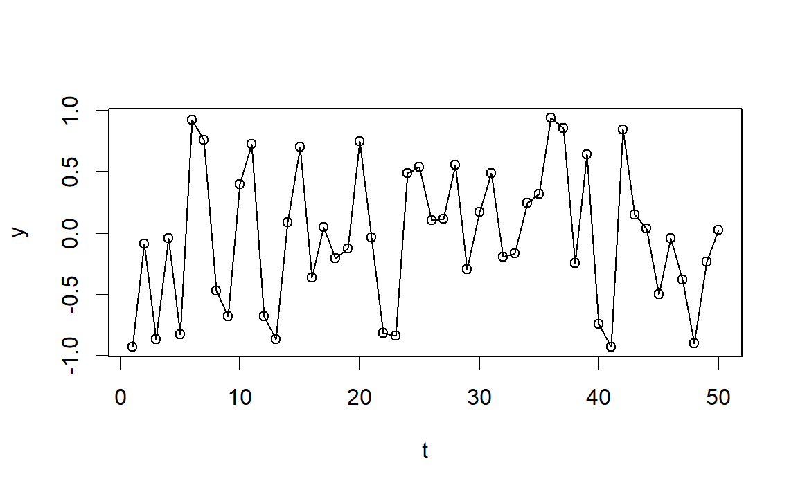
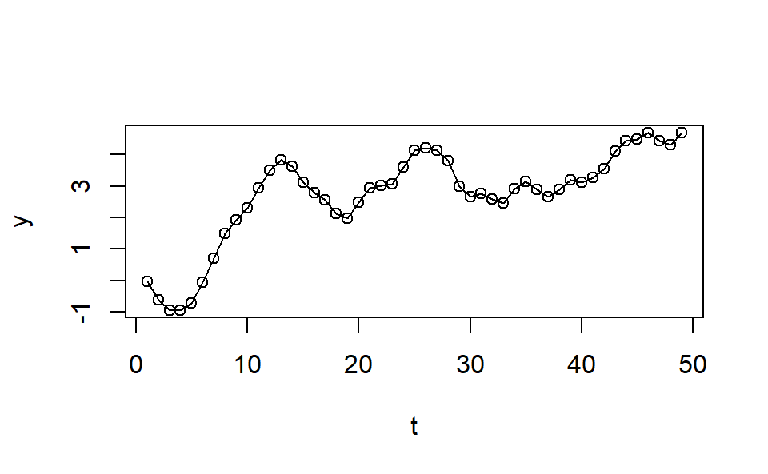

ARIMA
Applications of Data Science - Class 21
Giora Simchoni
gsimchoni@gmail.com and add #dsapps in subject
Stat. and OR Department, TAU
2023-04-07
Motivation
models_fit <- calves_tr |>
model(
Mean = MEAN(log_count),
Naive = NAIVE(log_count),
Seasonal_naive = SNAIVE(log_count),
LM = TSLM(log_count ~ trend()),
Arima = ARIMA(log_count)
)
models_fc <- models_fit |> forecast(calves_te)
models_fc |>
accuracy(
data = calves_te,
measures = list("RMSE" = RMSE, "MAE" = MAE)
)# A tibble: 5 × 4
.model .type RMSE MAE
<chr> <chr> <dbl> <dbl>
1 Arima Test 0.290 0.246
2 LM Test 0.718 0.575
3 Mean Test 1.08 0.904
4 Naive Test 1.21 1.05
5 Seasonal_naive Test 0.465 0.393Random Processes & Stationarity
White Noise
\(e_1, e_2, \dots\) are i.i.d RVs with mean 0 and variance \(\sigma^2\), and
\[\begin{aligned} Y_1 &= e_1 \\ Y_2 &= e_2 \\ & \vdots \\ Y_t &= e_t \end{aligned}\] Random Walk
\[\begin{aligned} Y_1 &= e_1 \\ Y_2 &= e_1 + e_2 \\ & \vdots \\ Y_t &= e_1 + \dots + e_t \end{aligned}\]Or simply: \(Y_t = Y_{t - 1} + e_t\)
Simple Moving Average
\[\begin{aligned} Y_2 &= \frac{e_{2} + e_{1}}{2} \\ & \vdots \\ Y_t &= \frac{e_{t} + e_{t-1}}{2} \end{aligned}\] Stationarity
“probability laws that govern the behavior of the process do not change over time”
Strong: \(Pr(Y_{t_1} < y_{t_1}, \dots, Y_{t_n} < y_{t_n}) = Pr(Y_{t_1-k} < y_{t_1-k}, \dots, Y_{t_n-k} < y_{t_n-k})\), for all choices of \(t_1, \dots, t_n\) and lag \(k\)
Weak:
- \(E(Y_{t}) = E(Y_{t + k})\) (mean constant over time)
- \(Cov(Y_t, Y_{t-k}) = Cov(Y_k, Y_0)\) (covariance depends on lag \(k\) only)
If \(Y_t \sim \mathcal{N}\) strong and weak requirements coincide.
So, which processes are (weakly) stationary?
How to “make” Random Walk stationary?
Autoregessive Processes
AR(p)
An observation \(Y_t\) is a linear combination of past \(p\) most recent observations:
\[ Y_t = c + \phi_1 Y_{t-1} + \phi_2 Y_{t-2} + \dots + \phi_p Y_{t-p} + e_t \] where \(c\) is a constant, \(e_t\) is an “innovation” term as before, thus \(Cov(e_t, Y_{t-k})=0\) for every \(k > 0\).
AR(1)
Let the process mean \(c\) be subtracted:
\[ Y_t = \phi Y_{t-1} + e_t \]
What if \(\phi = 0\)? What if \(\phi = 1\)?
\(E(Y_t) = \phi E(Y_{t-1}) + E(e_t) = \dots = 0\)
From stationarity:
\(Var(Y_t) = \phi^2Var(Y_t) + \sigma^2 \rightarrow Var(Y_t) = \frac{\sigma^2}{1-\phi^2}\)
So \(|\phi| < 1\).
AR(1)
\[\begin{aligned} Cov(Y_t, Y_{t-k}) &= E(Y_t Y_{t-k}) - E(Y_t)E(Y_{t-k}) \\ &= \phi E(Y_{t-1} Y_{t-k}) - E(e_t Y_{t-k}) \\ & \vdots \\ &= \phi^k Var(Y_t) = \phi^k \frac{\sigma^2}{1-\phi^2} \end{aligned}\]\[ \rho_k = Corr(Y_t, Y_{t-k}) = \frac{Cov(Y_t, Y_{t-k})}{\sqrt{Var(Y_t)}\sqrt{Var(Y_{t-k})}} = \phi^k \]
How would the ACF look like?
Is AR(1) (weakly) stationary?
AR(1) - ACF
Code
set.seed(1)
n <- 500
y_pos <- arima.sim(list(order = c(1,0,0), ar = 0.7), n = n)
y_neg <- arima.sim(list(order = c(1,0,0), ar = -0.7), n = n)
acf_df_pos <- make_acf_df(y_pos)
acf_df_neg <- make_acf_df(y_neg)
acf_df_pos$phi <- "phi == 0.7"
acf_df_neg$phi <- "phi == -0.7"
acf_df <- bind_rows(acf_df_pos, acf_df_neg)
acf_df |>
ggplot(aes(lag, acf)) +
geom_hline(aes(yintercept = 0)) +
geom_hline(aes(yintercept = -1/sqrt(n)), color = "blue", linetype = 2) +
geom_hline(aes(yintercept = 1/sqrt(n)), color = "blue", linetype = 2) +
geom_segment(aes(xend = lag, yend = 0)) +
facet_grid(. ~ phi, labeller = labeller(phi = label_parsed)) +
scale_x_continuous(breaks = 1:10) +
theme_bw()AR(1) - Lag Scatterplots
Code
library(patchwork)
y_lag_df <- tibble(
y = y_pos,
y_lag1 = TSA::zlag(y_pos, 1),
y_lag2 = TSA::zlag(y_pos, 2),
y_lag3 = TSA::zlag(y_pos, 3)
)
p1 <- ggplot(y_lag_df, aes(y, y_lag1)) +
geom_point() +
labs(x = expression("Y"[t]), y = expression("Y"[t-1])) +
theme_bw()
p2 <- ggplot(y_lag_df, aes(y, y_lag2)) +
geom_point() +
labs(x = expression("Y"[t]), y = expression("Y"[t-2])) +
theme_bw()
p3 <- ggplot(y_lag_df, aes(y, y_lag3)) +
geom_point() +
labs(x = expression("Y"[t]), y = expression("Y"[t-3])) +
theme_bw()
p1|p2|p3So will you recognize an AR(1) TS when you see it?
AR(2)
\[ Y_t = \phi_1 Y_{t-1} + \phi_2 Y_{t-2} + e_t \]
\(E(Y_t) = \phi_1 E(Y_{t-1}) + \phi_2 E(Y_{t-2}) + E(e_t) = \dots = 0\)
From stationarity \(\gamma_k = Cov(Y_{t}, Y_{t-k})\) for any \(t, k\), so:
\[\begin{aligned} \gamma_0 = Var(Y_t) &= \phi_1^2Var(Y_{t-1}) + \phi_2^2Var(Y_{t-2}) + 2\phi_1\phi_2Cov(Y_{t-1}, Y_{t-2}) + \sigma^2 \\ & = (\phi_1^2 + \phi_2^2)\gamma_0 + 2\phi_1\phi_2\gamma_1 + \sigma^2 \end{aligned}\]On the other hand:
\[\begin{aligned} \gamma_1 = Cov(Y_{t}, Y_{t-1}) = E(Y_{t}\cdot Y_{t-1}) &= E([\phi_1 Y_{t-1} + \phi_2 Y_{t-2} + e_t] \cdot Y_{t-1}) \\ &= \phi_1E(Y^2_{t-1}) + \phi_2Cov(Y_{t-1}, Y_{t-2}) = \phi_1\gamma_0 + \phi_2\gamma_1 \end{aligned}\]Giving… \(\gamma_0 = Var(Y_t) = \left(\frac{1-\phi_2}{1+\phi_2}\right)\frac{\sigma^2}{(1-\phi_2)^2-\phi_1^2}\)
AR(2)
In the same way we can show for any \(k\):
\[ \gamma_k = Cov(Y_t, Y_{t-k}) = \phi_1\gamma_{k-1} + \phi_2\gamma_{k-2} \]
\[ \rho_k = Corr(Y_t, Y_{t-k}) = \frac{Cov(Y_t, Y_{t-k})}{\sqrt{Var(Y_t)}\sqrt{Var(Y_{t-k})}} = \phi_1\rho_{k-1} + \phi_2\rho_{k-2} \]
The Yule-Walker equations! Though there is a closed form.
Counting on \(\rho_0 = 1\) and \(\rho_{-1} = \rho_1\), we get:
\[ \rho_1 = \frac{\phi_1}{1-\phi_2}; \quad \rho_2 = \frac{\phi_2(1-\phi_2) + \phi_1^2}{1-\phi_2}; \]
AR(2) - ACF
Here \(\phi_1 = 1\) in both TS:
Code
set.seed(1)
n <- 500
y_pos <- arima.sim(list(order = c(2,0,0), ar = c(1.0, -0.25)), n = n)
y_neg <- arima.sim(list(order = c(2,0,0), ar = c(1.0, -0.6)), n = n)
acf_df_pos <- make_acf_df(y_pos)
acf_df_neg <- make_acf_df(y_neg)
acf_df_pos$phi <- "phi[2] == -0.25"
acf_df_neg$phi <- "phi[2] == -0.6"
acf_df <- bind_rows(acf_df_pos, acf_df_neg)
acf_df |>
ggplot(aes(lag, acf)) +
geom_hline(aes(yintercept = 0)) +
geom_hline(aes(yintercept = -1/sqrt(n)), color = "blue", linetype = 2) +
geom_hline(aes(yintercept = 1/sqrt(n)), color = "blue", linetype = 2) +
geom_segment(aes(xend = lag, yend = 0)) +
facet_grid(. ~ phi, labeller = labeller(phi = label_parsed)) +
scale_x_continuous(breaks = 1:10) +
theme_bw()Stationarity Conditions
In AR(1) we only needed \(|\phi| < 1\).
In AR(2), for example, from \(\rho_1 = \frac{\phi_1}{1-\phi_2}\) it is clear that if \(\phi_2 < 1\): \(\phi_1 + \phi_2 < 1\) and \(\phi_2 - \phi_1 < 1\)
In general it can be shown that for AR(p) to be stationary the characteristic polynomial \(1-\phi_1x-\phi_2x^2- \dots -\phi_px^p = 0\) needs \(p\) roots above 1 in absolute value.
For AR(1): \(1-\phi x = 0 \rightarrow |1/\phi| > 1 \rightarrow |\phi| < 1\)
For AR(2): \(1-\phi_1x-\phi_2x^2 = 0 \rightarrow \left|\frac{\phi_1 \pm \sqrt{\phi_1^2 + 4\phi_2}}{-2\phi_2}\right| > 1 \rightarrow \phi_1 + \phi_2 < 1, \phi_2 - \phi_1 < 1, |\phi_2| < 1\)
Unit Root Tests
In general, the roots must lie outside the unit circle in the complex plane, hence we have unit-roots tests, to test for stationarity:
Augmented Dickey-Fuller Test
data: y_pos
Dickey-Fuller = -7.8867, Lag order = 0, p-value = 0.01
alternative hypothesis: stationary kpss_stat kpss_pvalue
0.1039691 0.1000000 See also unitroot_ndiffs() in fable for determining how many diffs are needed for stationarity.